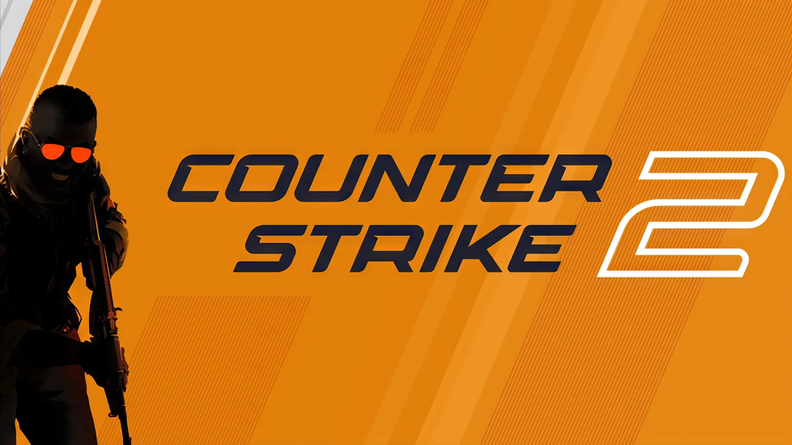

Головна - Що таке CS2?
Counter-Strike 2 - Official Launch Trailer
Counter-Strike 2 - багатокористувацька гра в жанрі тактичного шутера від першої особи, розроблена компанією Valve. Є 5-ю грою в серії Counter-Strike. Valve анонсувала гру 22 березня 2023 року, оголосивши, що вона вийде влітку 2023 року. Компанія почала розсилати перші запрошення на обмежений тест для Counter-Strike 2 в ніч з 22 на 23 березня 2023 року, доступний тільки для користувачів Windows, доступ до нової версії гри отримали не всі гравці, а лише частина. За офіційною інформацією, компанія спиралася на кількість годин на офіційних серверах і на Trust Factor. Реліз гри відбувся 27 вересня 2023 року. Counter Strike 2 замінила CS:GO, яка була видалена зі Steam.

Розробка - Після кількох років чуток про продовження Counter-Strike: Global Offensive, Valve офіційно оголосила про розробку сиквелу. Також було підтверджено, що гра вийде влітку 2023 року як безкоштовне оновлення Counter-Strike: Global Offensive. Сиквел був описаний як «капітальний ремонт кожної системи, кожного елемента контенту і кожної частини ігрового процесу». У березні 2023 року було проведено тест гри. Покращення включають перероблені карти і поліпшені аудіо-візуальні ефекти, а також зміни у використанні димових гранат і багато іншого. Освітлення, текстури та дизайн були змінені. Компанія Valve повідомила: «Дим тепер взаємодіє з іншими ігровими процесами, створюючи нові можливості. Кулі та гранати можуть виробляти дим, на короткий час закриваючи лінію огляду або розширюючи оклюзію». Дим також може «природним чином заповнювати простір» і реагувати на освітлення. Компанія підтвердила перенесення ігрових предметів із Counter-Strike: Global Offensive у Counter-Strike 2. Також був проведений редизайн графічного інтерфейсу гри, зокрема головного меню. Вихід оновлення відбувся в обід 27 вересня за місцевим часом, а за київським часом близько 23:00.
Цікавитесь історією танкобудування?
Дізнайтесь про розвиток танкових технологій, визначні моделі та історичні факти на спеціалізованому сайті!
Відвідати сайтВладислав Email: dkflrf1274@gmail.com